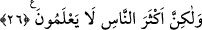

HERKES
KAZANCINA GÖRE
KARŞILIK GÖRÜR
22. Allah, gökleri ve yeri yerli yerince yaratmıştır. Böylece herkes kazancına
göre karşılık görür. Onlara haksızlık edilmez.
23. Hevâ ve hevesini tanrı edinen ve Allah’ın (kendi katındaki) bir bilgiye göre
saptırdığı, kulağını ve kalbini mühürlediği, gözünün üstüne de perde çektiği
kimseyi gördün mü? Şimdi onu Allah’tan başka kim doğru yola eriştirebilir? Hâla
ibret almayacak mısınız?
24. Dediler ki: Hayat ancak bu dünyada yaşadığımızdır. Ölürüz ve yaşarız. Bizi
ancak zaman helâk eder. Bu hususta onların hiçbir bilgisi de yoktur. Onlar sadece
zanna göre hüküm veriyorlar.
25. Onlara açıkça âyetlerimiz okunduğu zaman: Doğru sözlü iseniz atalarımızı
getirin, demelerinden başka delilleri yoktur.
26. De ki: Allah sizi diriltir, sonra öldürür. Sonra sizi şüphe götürmeyen kıyâmet
gününde biraraya toplar. Fakat insanların çoğu bilmezler.
“Allah, gökleri ve yeri gerçek olarak” yâni hak sebebiyle ve hakkın açığa çıkması
için “yaratmıştır.” Âlem ve kâinatın zerrelerinden her bir zerreye Allah Teâlâ esmâsı
ve sıfatlarıyla tecellî eder. Fakat bunu ancak müşahede ehli olan görür. İşte bu hakkın
zuhuru ve varlığıyla bâtıl ve yokluk ortadan kalkar. Allah Teâlâ’nın “Allah arşa istivâ
etti” (A’raf, 7/54) kavlinin sırrı bu eksende deveran etmektedir. Zâlimlerin dediği gibi